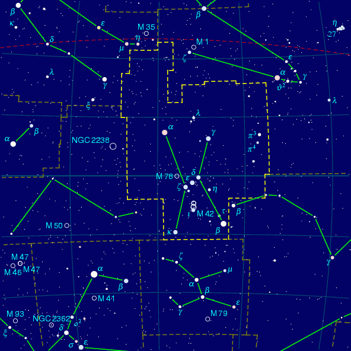

The minimal PP3 input script is – well – the empty file. Then PP3's default values create a dark blue star map of Orion:

You can override these defaults step by step. Let's do so: Write
# Cygnus, the Swan
filename output swan.tex
switch pdf_output on
set center_rectascension 19.95
set center_declination 40.8
to the file swan.pp3 and call
pp3 swan.pp3
The result of these only four lines of input is a file swan.pdf
in the current directory with a star map of the Swan.
The lines of swan.pp3 are not difficult to explain: The very
first line is a comment. Everything that starts with a # is a
comment. You can write descriptive text in them to make the file more
readable.
The line
filename output swan.tex
makes PP3 write the generated map to the file swan.tex.
But such a file is rarely the desired output. Therefore the next line
switch pdf_output on
tells PP3 that we want to have a PDF file. So PP3 does everything necessary for that. And finally,
set center_rectascension 19.95
set center_declination 40.8
denotes the area of the sky that we want to be displayed. Both values indicate the celestial point that we want to have in the centre of the map. In this case, 19.95h rectascension and +40.8^\circ declination which is the centre of the constellation Swan. See List of all constellations, for a complete list of all constellations, along with their coordinates and more.